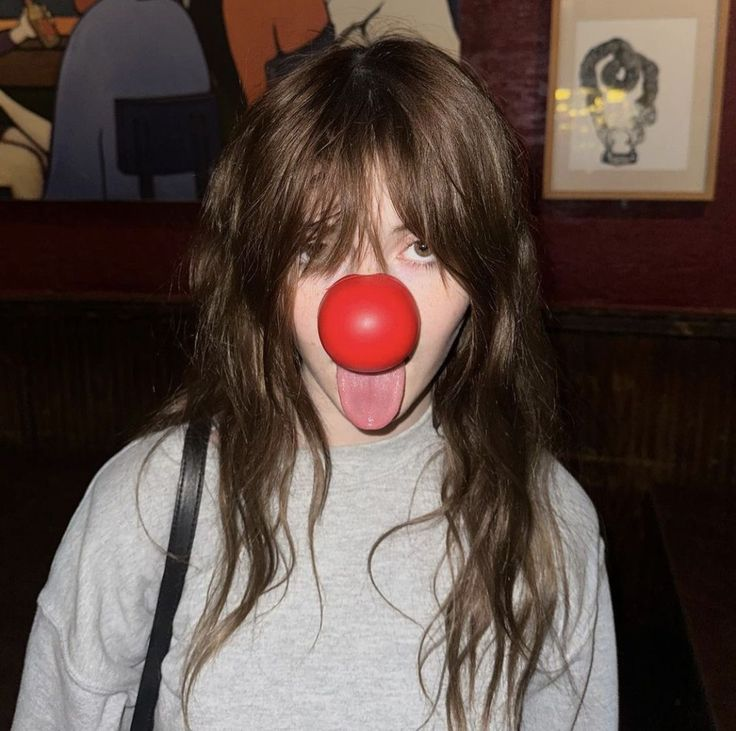

História dos Palhaços 🎪
Origem dos palhaços
Os palhaços existem há séculos, surgindo nas cortes medievais como figuras responsáveis por entreter a nobreza com humor e sátiras.
No circo moderno, o palhaço se tornou o personagem mais amado, sendo responsável por momentos de humor e interação com o público.
- Bufões medievais (século XIII)
- Commedia dell'arte italiana (século XVI)
- Circo inglês (século XVIII)
- Circo americano (século XIX)
- Palhaços modernos e memes (século XXI)
Tipos de Palhaços 🎭
Existem diferentes estilos de palhaço ao redor do mundo
Cada tipo possui características únicas de comportamento, figurino e interação com o público, sendo fundamentais para diferentes estilos de apresentação.
- Augusto (nariz vermelho, caótico e engraçado)
- Branco (elegante, o "sério" da dupla)
- Tramp (palhaço vagabundo, estilo Chaplin)
- Assustador (estilo It, cultura pop)
Mídia 📸
